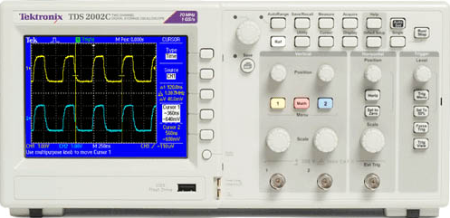
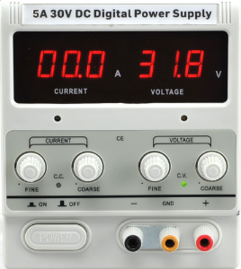

Welcome to my website. Here you can access my projects and things that I do or like.
My Projects mainly consist of a few categories.
- Electronics
- Analog
- Digital
- Reverse Engineering
- Physics
- Computers
- Coding
- BASIC
- Python
Follow me on: Twitter /GitHub /YouTube to get the latest from me!
My Hardware!
Oscilloscope:
I have a TDS 2002 without any add-ons. I also have two probes. This oscilloscope was donated by Tektronix Turkey in 2017 on request by me. Frequently used and always sits on my "lab bench" aka my table. SPECS: Max. Freq. : 60 MHz Sampling Rate : 1 GS/s Channels : 2Oscilloscope:
I have a PS-305D. I bought it for 200TL in 2016. It is a war veteran and I am using it more than my osciloscope. SPECS: Max. Voltage : 30V Max. Amperage: 6A